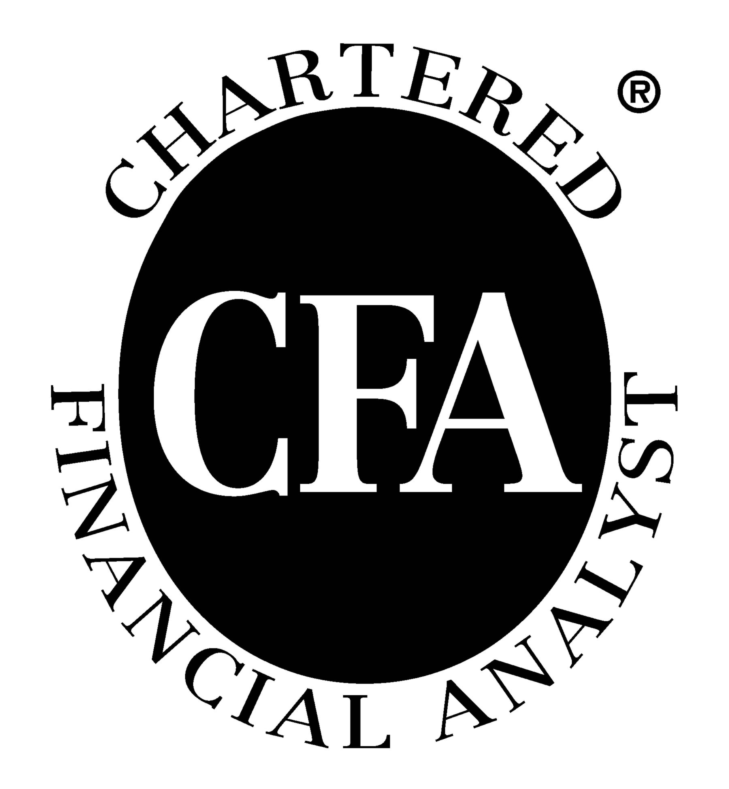
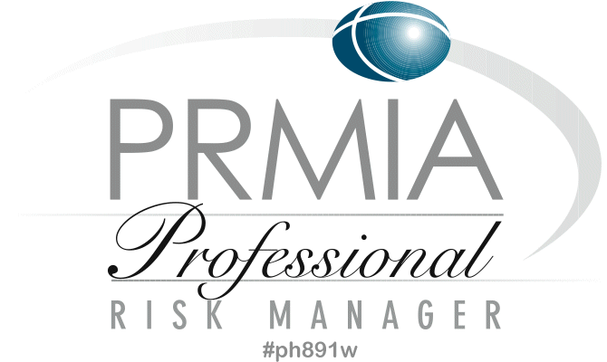

About
Seventh Wave is led by Dr Phil Drew, CFA, an experienced Professional Risk Manager (PRM) with a Ph.D in Computational Physics and Certificate in Quantitative Finance (CQF).
Before founding Seventh Wave, Dr Drew has led the quantitative and risk management departments for companies including:
• the first and most successful physical shipping hedge fund,
• private shipping company,
• derivatives hedge fund,
• a shipping pool.
Dr Drew offers insight from the worlds of institutional investment, hedge funds, quantitative analysis, business strategy, software development and enterprise risk management.
From this wealth of knowledge, Seventh Wave has created a bank of tools and systems for quantitative risk management, pricing and strategy, which we now offer to clients to super-charge their risk management department and turn it into a valuable asset.


In the last decades, uncertainty in financial markets has driven ever closer scrutiny to the risk management of financial and non-financial firms.
Whilst regulators demand ever more risk oversight at the highest levels, risk managers themselves have set to work turning the risk function from a cost center into a profit center.
This is done by improving the quantitative quality of risk reporting and by integrating quantitative risk into the firm's business strategy.
At Seventh Wave, we provide both of these services, delivering an end-to-end quantitative risk management desk, fully outsourced to minimise your costs.
"It used to be difficult to articulate the value of risk management, when for so long it has been seen as a necessary cost of doing business. But when you begin to see that good quant risk management can allow senior managers to effectively drive the company from the top and get concise quantitative feedback from the trading portfolios, the value becomes obvious." - Phil Drew